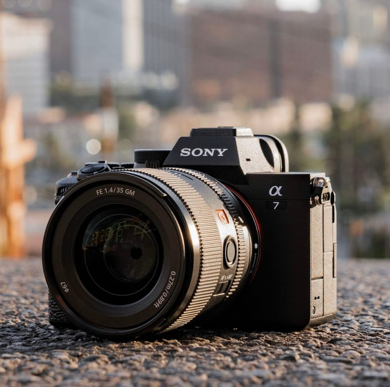

A hybrid camera is capable of producing exceptional quality in both photos and video. Hybrid cameras are for those who enjoy doing photo shoots and creating films too. One of the reasons a person would go for a hybrid camera is to save money. Owning a hybrid means you have two cameras in one, as opposed to buying two separate cameras like the Sony A7R V, mainly for photos, together with a Sony FX3, which is mainly for filming.
I highly recommend the Sony A7V for its in-body stabilisation, reliable battery life, and wide range of affordable lenses. The A7V has stabilisation for smooth video and clear photos built into the camera body, whereas many other cameras require a lens with built-in stabilisation or use digital stabilisation, which crops images and videos. In-body stabilisation also helps with low-light photography, which often needs a steady shot to avoid motion blur. The camera can also film 4K video for 90 minutes, which means you can record long events like graduations without worrying about switching your battery. Lens choices are also significantly better than those of its competitors, particularly Canon. Several third-party brands create lenses for Sony cameras that are cheaper than lenses made by Sony, with little to no difference in photo and video quality.